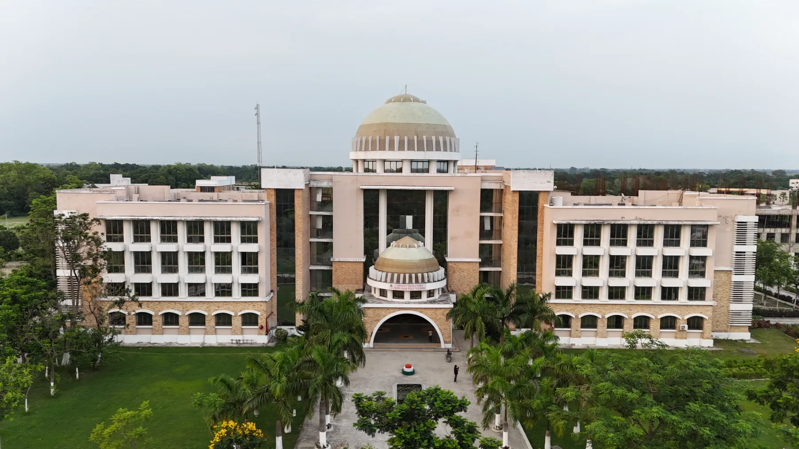
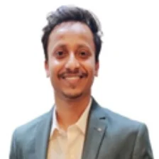
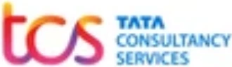
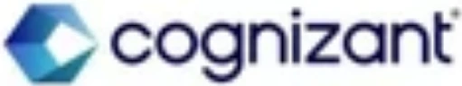
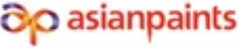
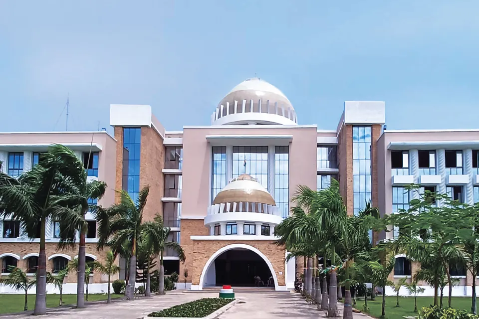

Engineering ki padhai, Bihar mein hi.
B.Tech Admission 2026 at Sandip University, Madhubani.
- Duration4 Years
- Eligibility10+2 with PCM
- Branches5
- Campus125+ acres
- UGC recognised
- NAAC B++ accredited
Why Sandip
A private engineering university in Bihar, open to students from every state. Everything a B.Tech aspirant needs sits on one residential campus — which matters whether home is the next district or the other side of the country.
-
Faculty qualified at IITs and NITs
The university recruits faculty holding qualifications from leading IITs and NITs, and teaching here is done by people who trained at the institutions most families have in mind when they ask the question. Ask on the form below and the admission cell will tell you who heads your branch and where they studied, before you commit to anything.
-
Up to ₹4,00,000, interest-free
Bihar’s Student Credit Card covers up to ₹4,00,000 of your education, and under the state’s revised scheme it carries no interest at all — no property is pledged and a parent or guardian simply signs alongside you. It is the route most families here use. You apply through the state, and our admission cell prepares the DRCC file with your family so nobody works out the paperwork alone.
-
A residential campus of 125+ acres
Separate boys’ and girls’ hostels with resident wardens, mess, 24×7 security and power backup. An engineering college with hostel matters when home is four districts away — or four states.
-
An EV Lab, not a generic workshop
Students strip and rebuild complete electric vehicles: battery packs, motor controllers, the full wire harness. It is the kind of work a graduate can describe in an interview, which a lecture-only course never produces.
Programmes
Five four-year branches across two schools. The fee and the entry mark are not the same for both schools, so each row states its own.
Eligibility
45% in 10+2 and 45% in PCM. Four years, eight semesters.
Lateral entry: a 3-year Diploma with at least 50% takes you straight into the second year, at the same fee as the first.
What you study
Structural analysis and design, construction technology, surveying, transportation, geotechnical and environmental engineering, with AutoCAD and STAAD Pro in the laboratory.
Where it leads
Site Engineer, Structural Designer, Project Engineer. Of the five, this civil engineering college route has the widest government intake: SSC JE, State JE and AE examinations, Railways, PWD and NHAI.
Eligibility
45% in 10+2 and 45% in PCM. Four years, eight semesters.
Lateral entry: a 3-year Diploma with at least 50% takes you straight into the second year, at the same fee as the first.
What you study
Power systems, electrical machines, control systems and power electronics, alongside the EV Lab, where students build battery packs and wire complete vehicle harnesses.
Where it leads
Electrical Engineer, Automation Engineer, Testing Engineer, with state DISCOMs, Railways, NTPC and PGCIL as the usual government routes.
Eligibility
45% in 10+2 and 45% in PCM. Four years, eight semesters.
Lateral entry: a 3-year Diploma with at least 50% takes you straight into the second year, at the same fee as the first.
What you study
Thermodynamics, machine design, manufacturing processes, fluid mechanics and CAD/CAM, taught alongside workshop practice rather than after it.
Where it leads
Design Engineer, Production Engineer, Maintenance Engineer. This mechanical engineering college route leads to SSC JE, Railways, NTPC, BHEL and IOCL.
Eligibility
50% in 10+2 and 45% in PCM. Four years, eight semesters.
Lateral entry: a 3-year Diploma with at least 50% takes you straight into the second year, at the same fee as the first.
What you study
The full computer science engineering core: programming, data structures and algorithms, database systems, operating systems, computer networks, and web and software engineering.
Where it leads
Software Engineer, Application Developer, Systems Analyst, QA Engineer. Also the strongest of the five for GATE and postgraduate study.
CSE or CSE with AI & ML?
This is the general computer science degree. It covers everything the AI & ML branch covers in the first two years, and then goes wider rather than deeper: more systems, more networks, more software engineering.
Eligibility
50% in 10+2 and 45% in PCM. Four years, eight semesters.
Lateral entry: a 3-year Diploma with at least 50% takes you straight into the second year, at the same fee as the first.
What you study
The same computer science core, then a specialisation stream: Python for data work, machine learning algorithms, neural networks and deep learning, natural language processing, computer vision and data analytics.
Where it leads
Machine Learning Engineer, Data Analyst, AI Developer, as well as every role open to the general CSE branch.
CSE or CSE with AI & ML?
The ₹20,000 a year buys the specialisation stream, not a different degree. If you enjoy mathematics and statistics and want to be hiring-ready for AI work specifically, take it. If you are not sure yet, the general CSE branch keeps more doors open and costs less.
Not sure which branch your marks open up? Tell us your 10+2 percentage and we will tell you where you stand — in one call, with no obligation.
Check my eligibilityPlacement assistance that starts in first year
Aptitude and communication work begins in the first year, not the final one, and runs through resume workshops, mock interviews and campus drives. The university states 100% placement assistance, which is support for every eligible student and not a guarantee of a job.
-
12 LPA
Mayashankar Kumar
B.Tech
Bharat Dynamics Limited
-
7 LPA
Vidyanand Prakash
B.Tech Civil
MGH Infra
-
3 LPA
Vikas Kumar
B.Tech Electrical
TEXMACO Rail & Engineering
Three of the students the university names on its published placement record, with the company and the package against each.
See students, companies and packages Hide the list
-
3 LPA
Vikas Kumar
B.TECH-EE
Texmaco Rail & Engineering
-
3 LPA
Suraj Kumar
B.TECH-EE
Texmaco Rail & Engineering
-
7 LPA
Ritesh Kumar
B.TECH-EE
MGH Infrastructure
-
3 LPA
Nitesh Kumar
B.TECH-EE
Texmaco Rail & Engineering
-
3 LPA
Bittu Kumar
B.TECH-EE
Texmaco Rail & Engineering
-
7 LPA
Vidyanand Prakash
B.Tech Civil
MGH Infra
-
7 LPA
Niraj Kumar
B.Tech Civil
MGH Infra
-
7 LPA
Shivam Krishanam
B.Tech Civil
MGH Infra
-
7 LPA
Prashant Kumar
B.Tech Civil
MGH Infra
-
7 LPA
Shankar Kumar
B.Tech Civil
MGH Infra
-
7 LPA
Jitendra Kumar Mandal
B.Tech-Computer Science
MGH Infra
-
7 LPA
Ritesh Kumar
B.Tech- Electrcal
MGH Infra
-
12 LPA
Mayashankar Kumar
B.Tech
Bharat Dynamics Limited
-
5 LPA
Abhay Kumar Tibrewal
B.Tech
Infosys
-

7 LPA
Krishna Kumar
B.Tech
Icertis, Pune
-
4.5 LPA
Guru Sharan Kumar Ram
B.Tech - CSE
Codebucket Solutions
These are the B.Tech students the university names publicly, with the photograph, company and package it publishes against each. Its full record runs to 40 entries across all programmes, and placement support is offered to every eligible student — what you see here is the part you can check name by name, which is the part worth showing.
Companies that recruit at Sandip University
- TEXMACO Rail & Engineering
- Bharat Dynamics Limited

- HCL
- MGH Infra

- GeBBS
- Codebucket Solutions

- Atos
Want to know which companies come for your branch, and what they ask in the interview? The admission cell will walk you through it.
Ask about my branchFees, scholarship and the Student Credit Card
Tuition is only part of what a family pays in the first year. Everything the university charges is set out below, then the two routes that reduce it.
Annual tuition, by branch
| Branch | Per year |
|---|---|
| B.Tech (Civil Engineering) | ₹90,000 |
| B.Tech (Electrical Engineering) | ₹90,000 |
| B.Tech (Mechanical Engineering) | ₹90,000 |
| B.Tech (Computer Science and Engineering) | ₹1,05,000 |
| B.Tech (Computer Science and Engineering with AI & ML) | ₹1,25,000 |
Lateral entry into the second year is charged at the same rate as the first. The university’s own Polytechnic runs at ₹78,000 a year.
What the first year actually costs
Tuition plus every one-time charge below. Indicative, and before any scholarship or Student Credit Card is applied.
| Branch tier | Day scholar | With hostel |
|---|---|---|
| Civil, Electrical, Mechanical | ₹1,01,500 | ₹1,81,500 |
| Computer Science and Engineering | ₹1,16,500 | ₹1,96,500 |
| CSE with AI & ML | ₹1,36,500 | ₹2,16,500 |
Day scholar adds forms, registration, uniform and caution money to tuition. With hostel adds a year’s hostel charge and the hostel security deposit. Caution money is refundable. Convocation is charged in the final year, not the first, so it is not counted here.
What else you pay
| Item | Amount | When |
|---|---|---|
| Forms and prospectus | ₹500 | One time |
| Registration fee | ₹2,500 | One time |
| Uniform | ₹5,500 | At admission |
| Hostel | ₹75,000 | Per year |
| Hostel security deposit | ₹5,000 | One time |
| B1 hostel supplement | ₹10,000 | Per year, subject to availability |
| University caution money | ₹3,000 | Refundable |
| Convocation and certificate | ₹3,000 | Final year |
The Bihar Student Credit Card
Sandip University accepts the Bihar Student Credit Card, the state government’s education loan for students who have passed 10+2 and hold Bihar domicile. It is the route most families here use, and it is the reason the engineering college with student credit card search exists at all.
The loan is applied for through the state, not through the university. You register online on the Bihar government portal, and then attend your DRCC in person within 60 days to complete verification. Our admission cell prepares the file with your family so nobody works it out alone.
Approval and the sanctioned amount rest with the Government of Bihar, so the university works to the state’s process rather than around it — which is why our admission cell prepares your file to the standard the DRCC expects and stays with it until the sanction comes through.
The portal is the Bihar Student Credit Card scheme under 7 Nishchay — Yuva Up Mission. Ask us on the form below and the admission cell will send you the current link, the scheme document and your nearest DRCC address together, rather than leaving you to find three things separately.
- Maximum loan
- ₹4,00,000
- Interest
- Nil. The revised state scheme is interest-free for every applicant.
- Repayment
- Repayment starts a year after the course ends: up to 84 monthly instalments, and up to 120 on a loan above ₹2,00,000.
- Security
- No property or deposit is pledged. A parent, spouse or guardian signs as co-applicant.
- Age limit
- 25 years on the date of application.
- Documents
- Aadhaar for you and your co-applicant, your marksheets and certificates, a bank passbook showing IFSC, the admission letter and fee statement from the university, address proof and two photographs each. Nothing is uploaded online — you carry the originals to the DRCC.
The credit card application runs through the state, and most families do it once in their lives. Our admission cell prepares the file with you — tell us your branch and we will send the checklist and your nearest DRCC.
Send me the loan checklistScholarships
Merit, on your 10+2 marks
A tuition waiver is awarded on a sliding scale against your qualifying marks. The band you fall into is confirmed in writing after your documents are verified, before any payment is made.
- 85% and above
- 100% tuition waiver
- 80% to 84.99%
- 50% tuition waiver
- 75% to 79.99%
- 25% tuition waiver
SU-JEE, the entrance and scholarship test
The university runs its own entrance examination, SU-JEE, which doubles as the scholarship test. Sitting it is not required for admission — your 10+2 marks qualify you on their own — and the university counts “H.S.C., Graduation or SU-JEE, whichever applicable” as the qualifying mark for an award. It is a route to a merit waiver, not a gate in front of a seat.
Sports
A separate sports quota runs alongside the merit scheme and holds 2% of total intake. It waives tuition on the same sliding scale, one band lower at each step: full waiver from 80%, half from 75%, a quarter from 70%.
Tell us your 10+2 percentage and we will confirm your scholarship band in writing, work out your first-year total after the waiver, and check whether the Student Credit Card covers the rest. No payment at any point in that.
Get my fees in writingThe campus
Hostels, canteens, classrooms, gymnasium, library, round-the-clock security and an on-campus ambulance, on 125+ acres at Sijoul.

01 / 09
Main academic block
Main academic block, 1 of 9
How admission works
Four steps, in order. Diploma holders applying for direct second year follow the same four; where anything differs it is noted in the step.
-
Apply online, or call
Use the form at the foot of this page, or apply on the university’s admission portal directly. The portal asks for your name, Aadhaar, email and mobile, and verifies the number by OTP.
-
Submit documents, confirm eligibility
Upload your 10th and 12th marksheets and certificates. The entry mark differs by school, so eligibility is checked against the branch you have applied for.
Applying for direct second year: submit your 3-year diploma marksheet at this step instead of the 12th certificate.
-
Counselling and branch allotment
A counsellor goes through the branches, what each costs, and where you stand on the Student Credit Card. Admission is offered on your 10+2 marks. If you hold a JEE Main score you may put it forward and it will be considered, but it is not asked for and not sitting the exam does not count against you.
SU-JEE is the university’s own entrance and scholarship test. It is not required for B.Tech admission — 10+2 marks qualify you on their own — but it is one of the routes to a merit award.
-
Pay, and enrol
A place is provisional until the admission fee is paid, or until the DRCC formalities for the Student Credit Card are complete. Documents are checked once more at the campus admission cell before enrolment.
Do you qualify?
There are two entry bars, not one, and which applies depends on the branch. Read down until a line describes you.
-
You have 45% in 10+2 and 45% in Physics, Chemistry and Mathematics
Civil, Electrical and Mechanical are open to you. These three sit under the School of Engineering & Technology and share the lower bar.
-
You have 50% in 10+2, with the same 45% in PCM
All five branches are open, including Computer Science and Engineering and CSE with AI & ML. The overall mark is what separates the two schools; the PCM requirement is the same either way.
-
Your overall is between 45% and 50%
The three core branches are open to you; the two computer science branches are not. This is the case that catches people out, because the PCM requirement is met in both.
-
You hold a 3-year diploma with 50%
You do not start in the first year. Lateral entry puts you directly into the second year of any of the five, and the year is charged at the same rate as a first year.
A JEE Main score is not part of any of these. It is considered if you put it forward, and its absence counts against nothing.
Timing
Admission here is rolling: applications are assessed as they arrive rather than held for one closing date. The order below is fixed, and where you land in it depends on when your file is complete.
- Applications Open now, assessed as they arrive
- Document verification Once your application is in
- Counselling and branch allotment By merit, and by when you applied
- Scholarship band Confirmed in writing before you pay
- Fee payment Confirms the seat you have been allotted
Seats in each branch are limited, and branch allotment goes by merit and by the order in which files are completed. The earlier yours is in, the more choice you have — which is the real deadline, whatever the calendar says.
Found your line above? Then you are eligible, and the next step is a ten-minute call — branch, fees after the scholarship, and what to bring to the DRCC.
Start my applicationGetting here
The campus is at Sijoul, in Madhubani district, on the road between Jhanjharpur and Madhubani town. If you know Darbhanga, it is under an hour north of it.
- Jhanjharpur 12 km
- Madhubani town 21 km
- Darbhanga 54 km
- Muzaffarpur 114 km
- Patna 181 km
By road, approximate.
Neelam Vidya Vihar, Village Sijoul
P.O. Mailam, Madhubani
Bihar 847235
By train
Jhanjharpur is the nearest railhead, 12 km away. Sakri Junction, 31 km out, carries more long-distance services.
By air
Darbhanga Airport is 53 km away, with direct flights to Delhi, Mumbai, Bengaluru and Kolkata.
From Patna
Patna is about 3 hours away by road. It is the furthest of the towns listed, not the nearest, and most students here travel in from the Mithilanchal districts rather than from the state capital.
You can check this yourself
Three names higher up the page make the case. Here is the shape of the whole record behind them, and the page it comes from, so you do not have to take any of it on trust.
- 16
- B.Tech students the university names publicly, with company and package
- 6
- employers between them
- 3 to 12
- LPA, the range those offers sat in
How the branches fall
- Civil5
- Electrical6
- Computer Science2
- Branch not printed against the name3
Read it in full
The university publishes every one of these names with the photograph, the company and the package against each. The whole B.Tech part of that record is on this page, in the placements section above — open it there and read it without leaving.
The figures beside this are counted off that record rather than asserted, which is the point of printing it at all: nothing here asks you to take our word for it.
Every figure above is counted off the university’s own published record. If there is anything else you want to see before you decide, ask us for it.
Ask us anythingAapke sawaal
Jo cheezein upar detail mein hain, unka chhota jawab yahan hai. Jo yahan nahi mila, wo admission cell se pooch lijiye.
Branch par depend karta hai. Sabse kam ₹90,000 saal — Civil, Electrical aur Mechanical — aur sabse zyada ₹1,25,000, jo CSE with AI & ML ka hai. Isme sirf tuition hai; hostel, uniform aur registration alag lagta hai. Pehle saal ka poora hisaab Fees section mein diya hua hai.
Yahan admission rolling hai — applications ek closing date ka intezaar nahi karte, jaise aate hain waise assess hote hain. Isliye asli deadline calendar par nahi hai: har branch me seats limited hain, aur branch allotment merit ke saath-saath is baat par bhi jaata hai ki aapki file kab poori hui. Jitni jaldi enquiry bhejenge, branch ka choice utna zyada rahega. Admission cell aapko batayega ki abhi kya chal raha hai aur aapke case me agla kadam kya hai.
Haan. Admission aapke 10+2 ke marks par offer hota hai. JEE Main ka score hai to aap use aage rakh sakte hain aur usko consider kiya jayega, lekin wo maanga nahi jata, aur exam na dene se aapke against kuch nahi jata. Seat phir bhi eligibility check aur counselling ke baad hi milti hai.
Haan, university Bihar Student Credit Card accept karti hai. State ke revised scheme ke tehat ₹4,00,000 tak ka loan milta hai aur us par koi byaaj nahi lagta. Koi property giravi nahi rakhni padti — maata, pita, pati ya abhibhavak co-applicant ke roop mein saath sign karte hain, aur aavedan ke din aapki umr 25 saal se kam honi chahiye. Loan university se nahi, state se milta hai: pehle Bihar government portal par online register kijiye, phir 60 din ke andar apne DRCC jaakar verification poora kijiye. Admission cell aapke ghar walon ke saath poori file taiyar karta hai, isliye kagaz aapko akele nahi samajhne padte.
Do schools ka bar alag hai. Civil, Electrical aur Mechanical ke liye 45% in 10+2 and 45% in PCM chahiye. Computer Science aur CSE with AI & ML ke liye 50% in 10+2 and 45% in PCM. Yani jinka overall 45 aur 50 ke beech hai, unko teen core branches milti hain, computer science wali do nahi.
Paanch branches hain: Civil, Electrical, Mechanical, Computer Science and Engineering, aur CSE with AI & ML. Ye do alag schools ke under aati hain, isliye fees aur entry ka bar dono ka ek jaisa nahi hai. Har branch ka detail Programmes section mein khulta hai.
University 100% placement assistance kehti hai, matlab har eligible student ko support milta hai, job ki guarantee nahi. Aptitude aur communication ki training pehle saal se shuru hoti hai. University ne apne published record par 40 placements naam se rakhe hain, jinme 16 B.Tech ke hain — photo, company aur package ke saath, 3 se 12 LPA ke beech. Ye wo hissa hai jo aap khud naam se check kar sakte hain, aur wo isi page ke placements section me khulta hai — kahin jaana nahi padta.
Haan, campus par hostel hai. Hostel ₹75,000 saal ka hai, aur ₹5,000 security deposit alag lagta hai jo refundable hai. B1 block chahiye to ₹10,000 ka supplement hai, availability par. Hostel ke saath pehle saal ka total Fees section mein nikala hua hai.
Haan. 3-year Diploma with at least 50% hai to aap seedhe doosre saal mein aate hain, paanchon branches mein se kisi mein bhi. Wo saal pehle saal ke same rate par charge hota hai. Process wahi chaar steps ka hai; 12th ke certificate ki jagah diploma marksheet lagti hai.
Haan. University UGC recognised hai, aur NAAC ne ise B++ grade diya hai. Dhyan rakhiye ki ye Sandip University ka Sijoul, Madhubani campus hai, Nashik wale campus se alag.
Do raaste hain. Ek merit waiver hai jo aapke qualifying marks ke hisaab se sliding scale par milta hai; aap kis band mein aate hain wo documents verify hone ke baad, koi payment lene se pehle, likhit mein confirm hota hai. Doosra, SU-JEE ke through har intake mein kuch seats merit par reserved rehti hain, aur uske alawa ek sports quota bhi chalta hai.
Campus Sijoul mein hai, Madhubani district mein, Jhanjharpur aur Madhubani town ke beech wali road par. Patna se 181 km hai, road se about 3 hours. Lekin sabse paas ka railhead Jhanjharpur hai, sirf 12 km, aur Darbhanga under an hour door hai — zyadatar students Mithilanchal ke districts se aate hain, Patna se nahi.
Send your details
Someone from the admission cell will call you back and answer whatever the page has not. Asking costs nothing and commits you to nothing.
-
A person, not a bot
The call comes from the campus admission cell at Sijoul.
-
Bring the fee question
Student Credit Card, scholarship slabs, hostel, what the first year actually adds up to. It is the question most families call about.
-
Lateral entry too
Diploma holders joining the second year use this same form. Say so on the call and the cell will tell you what changes.